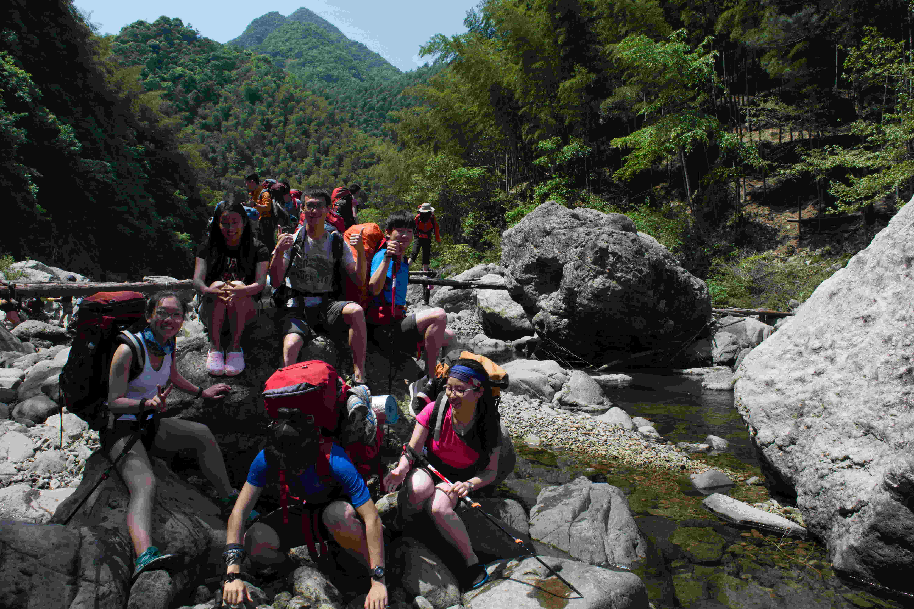

发信人: lvganyu (小雨儿), 信区: outdoor
标 题: 【团爆】宣传部
发信站: 饮水思源 (2016年12月23日16:55:06 星期五)
宣传部的团爆风格比较独特，所以我把所有作者匿名了，不过大家可以猜猜作者都是谁==
部长：孙东晓
神出鬼没的大三狗。体能优秀，技术还行。但是修图剪视频的技能真的让人不能不点个赞
。
screen.width - 200){this.width = screen.width - 200}">
副部长：郭宴竹
嗯，我所知道的唯一的在出线时与她男票相识并走在一起的，传说中野协出线必成一对的
传统是谁告诉我的!!,乍一看是贤妻良母型，实则恩，还是贤妻良母型，记得武功山上，强
行把做饭的任务甩给她和另外一个妹子，反正最后没有搞出阿毛的那样黑暗料理，能跟着
走下武功山来的，体能怎么也不算差吧~~~~
screen.width - 200){this.width = screen.width - 200}">
（左下角是郭宴竹）
其他在团爆中躺枪的吃瓜群众：
西瓜：
这个妹子，不，汉子，不，不是妹子也不是汉子，为人做事很干练，干脆，智商级别的选
手，认真起来可怕至极，开起车来可怕至极，唔，估计玩起量子力学来，也是可怕至极，
印象中少有的对协会感情极深的妹子，当初我入协会帮我科普了好多装备，以及协会的。
。。各种黑历史，对协会感情很深，说起体能来，人家毕竟是随随便便把西瓜背上山的人
好伐，人家毕竟冬训带着一帮汉子进行黑训的好伐，人家毕竟当年冬训第一批唯一的妹子
好伐，人家毕竟当年是野协体测和一群汉子一起跑的（12圈？？？忘了）总之，文lady的
体能超出了妹子，还能压住一些汉子，对，压住！还有，文lady的队记历史及其丰富，不
过是哪个记（妓）嘛，，，都怪你，好好的协会画风 开什么车？？？野协现任技术部长，
嗯记得当初备注是妓术部部长呢？？

screen.width - 200){this.width = screen.width - 200}">
screen.width - 200){this.width = screen.width - 200}">
吴舒旸
留一年头发，扎起来一个小辫子的暖男，冬训的时候不好好训练还想你什么清华的妹子，
啊，喂！考虑一下我等的感受？？冬训时和我睡在一个帐篷里，感受了北京-25度左右的严
寒之后，和他在一起总有种生死之交的感觉~
screen.width - 200){this.width = screen.width - 200}">
 screen.width - 200){this.width = screen.width - 200}">
谢欣然
走在领队后面，把全队带崩的妹子，因为，全队的速度取决于领队后面的妹子的速度，然
而这个妹子协会的线路走的很是稳健~，某次出线听说其父母是世界冠军级别的桥牌选手~
~~想必这个妹子的智商也高不可测吧~
孟晗
心思缜密，大大咧咧，做事就认真做完，还总是喜欢出去浪，和谁都能聊成一片，记
得是我清凉峰的副领队，尽职尽责，勤勤恳恳，完成了我和压队不愿做的一堆乱七八糟的
活，哦，对了，还有我相机和她的故事，蜜汁相机，还是蜜汁拍照手法？？？从我相机中
拍出来的她，她从不满意，恩，要么胖，要么表情奇怪~~为了生存，我就不放照片了。。
。（其实我给了别人，别人放不放就不管咯）
谭磊
体能真tm的强，据说跑过全马（还是半马？？）
screen.width - 200){this.width = screen.width - 200}">
screen.width - 200){this.width = screen.width - 200}">
screen.width - 200){this.width = screen.width - 200}">
麻磊
暖男！暖男！暖男，和他搭档两次出线，我犯错的时候，总是以第一时间告诉我没关系，
迅速给我说出解决办法，遇事沉着冷静，攀岩也是他和文颖当初给我很大的帮助~思维也比
较缜密，据说当年穿拖鞋下过山？？？
李宾锐
责任感比较强的野人，做事啥的都有自己的要求，而且经常就“讲道理，我感觉…………
”体能也是一流，毕竟登山队队长咯，探路的时候在出现一些问题的时候也能比较镇静的
分析线路情况，决定下一步的动作，不过这人当初惊艳我的是一手修拉链的绝活，大明山
上，第一次和他接触，当他花了10mins修好我们外账的拉链的时候，我一拉就拉坏了0.0，
，，，然后就5s毁了他10mins的工作，这兄弟就懵逼了一会，然后又花了10min修好了说“
你别动这边！！”。。好吧0.0
screen.width - 200){this.width = screen.width - 200}">
赵佳伟
装备部，自古装备部出神人，想必这也是一个修拉链的好手吧，犹记当年某次训练后，发
现其腿上有伤，众好友嬉笑着讨论他是不是跪键盘跪的，hhh
子傲
少有的一说名字就给我鲜明印象的人，冬训让大家都学会了小傲的说话方式，去年18成人
礼恰逢协会年会，被直接阿18下，这个庄严的成人仪式估计也没谁了，hhh，年级虽小，但
做事还是很缜密的，不过，小傲你什么时候减肥啊~~~当年的冬训你的体型可不是这样。。
screen.width - 200){this.width = screen.width - 200}">
screen.width - 200){this.width = screen.width - 200}">
孙瑞田
体能不错~雪山队嘛，更多的则是记住了他的西地那非~~hhhh
史万荣
虽有微胖的身材，体能却是一点都不差，有一种灵活的小胖子的感觉，万年被黑，可能是
长的比较黑吧，hhhh
蒋峰铭
大明山一组的队员，当初将信将疑的信了我的香蕉味的麦片，最后吃的简直惨不忍睹，估
摸着以后出线再也不敢买麦片吃了，很nice的妹子，攀岩队的时候，当初记得过第一个抱
石线的时候，因为腿短一脸忧郁的表情看着麻磊和我直接腿长登过去，233333
screen.width - 200){this.width = screen.width - 200}">
赵振东
mdzzd嘛（( ﹁ ﹁ ) ~→）
攀岩队副队长哟

--
( ・ˍ・) (・ˍ・*)
※ 来源:·饮水思源 bbs.sjtu.edu.cn·[FROM: 59.78.32.54]
|